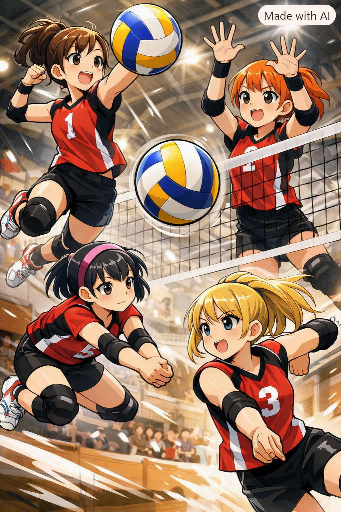
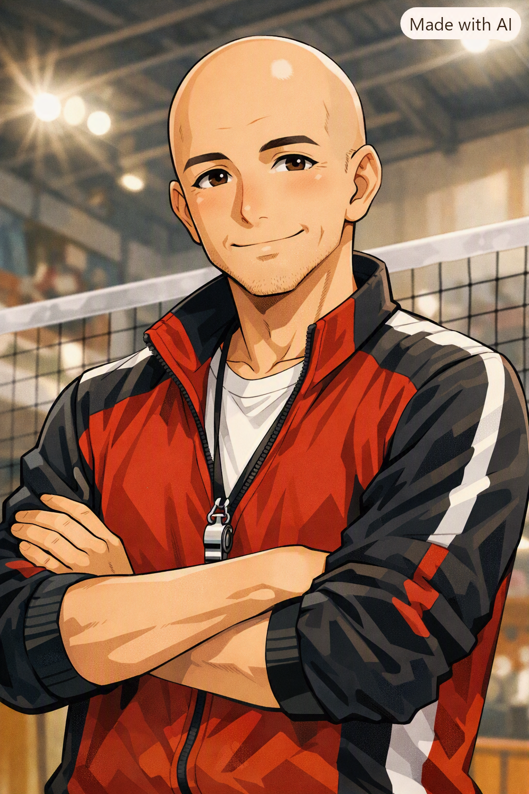

小学1〜5年生・初心者歓迎笑って、跳んで、
笑って、跳んで、
仲間になろう！
岩国市の灘JVCで、バレーボールを楽しく始めませんか？国籍・経験は問いません。

灘JVCってこんなチーム
山口県岩国市で活動するジュニアバレーボールクラブです。小学1年生から5年生まで、学年や経験に関係なく一緒に練習しています。できた！の喜びを大切に、基礎から丁寧にサポートします。
対象小学1〜5年生
練習月・水・金 17:00〜19:00
場所灘供用会館
費用月謝1,500円
ユニフォーム積立1,500円
ユニフォーム積立1,500円
参加までの3ステップ
1
まずは見学
練習の雰囲気を気軽に見に来てください。
練習の雰囲気を気軽に見に来てください。
2
体験練習
動きやすい服装で、ボールに触れてみよう。
動きやすい服装で、ボールに触れてみよう。
3
楽しくスタート
わからないことは何でもご相談ください。
わからないことは何でもご相談ください。
コーチからひとこと

「バレーって楽しい！」から始めて大丈夫。できることが少しずつ増えるよう、一人ひとりのペースに寄り添います。まずは遊びに来てください！
小学生ルールクイズ
答えを選んでね！
※JVA/FIVBの公式ルールを参考にした入門クイズです。大会やカテゴリーによってローカルルールが適用される場合があります。21点制など、得点方式は大会ごとに異なるので大会要項を確認してください。
保護者の方へ よくある質問
毎回の付き添いは必要ありません。練習中は指導者が見守ります。
女の子のチームのため、保護者の見守り当番をお願いしています。詳細は入部時にご案内します。
チームLINE、または事前に監督・コーチへ口頭でご連絡ください。
もちろんです。家庭の予定やお子さまの体調を優先して、無理なくお休みください。
練習場所
岩国市 灘供用会館
練習日により変更となる場合は事前にご案内します。
見学・お問い合わせ
個別質問メールフォーム
入力内容をメールソフトに引き継ぎます。送信前に内容をご確認ください。